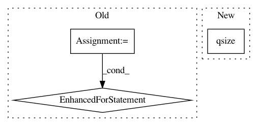

834af542462c89643a35b7c7719782709ec03d5a,snorkel/udf.py,UDFRunner,apply_mt,#UDFRunner#Any#Any#,88
Before Change
// Otherwise just join on the UDF.apply actions
else:
for i, udf in enumerate(self.udfs):
udf.join()
// Terminate and flush the processes
for udf in self.udfs:
udf.terminate()
self.udfs = []
After Change
progress_queue = JoinableQueue()
// Keep track of progress counts
total_count = in_queue.qsize()
count = 0
// Start UDF Processes
for i in range(parallelism):
In pattern: SUPERPATTERN
Frequency: 3
Non-data size: 3
Instances
Project Name: snorkel-team/snorkel
Commit Name: 834af542462c89643a35b7c7719782709ec03d5a
Time: 2018-08-02
Author: catalin@cs.stanford.edu
File Name: snorkel/udf.py
Class Name: UDFRunner
Method Name: apply_mt
Project Name: QUANTAXIS/QUANTAXIS
Commit Name: 10919a8125c64db1fecee47d4480ae6c5c9f7224
Time: 2019-04-10
Author: Zeroun@github.com
File Name: QUANTAXIS/QAFetch/QATdx_adv.py
Class Name: QA_Tdx_Executor
Method Name: api_worker
Project Name: HazyResearch/fonduer
Commit Name: 735287afab4bdcbd791022dc9d75d88a4032c616
Time: 2019-10-23
Author: hiromu.hota@hal.hitachi.com
File Name: src/fonduer/utils/udf.py
Class Name: UDFRunner
Method Name: _apply_mt